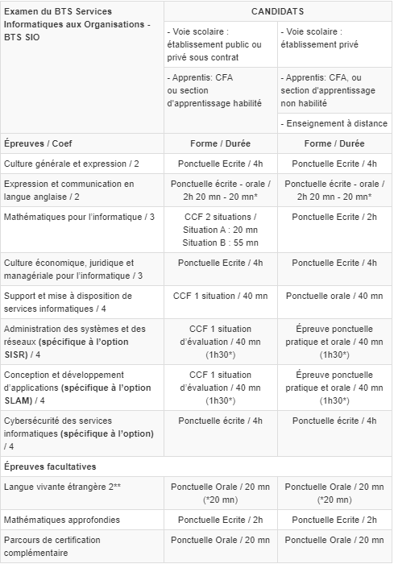

BTS SIO
Brevet de Technicien Supérieur | Services Informatiques aux Organisations
Le Brevet de Technicien Supérieur - Services Informatiques aux Organisations (BTS SIO),
s'adresse à ceux qui souhaitent se former en deux ans aux métiers d'administrateur réseau ou de développeur.
Pour par la suite intégré directement le marché du travail ou continuer des études,
dans le domaine de l'informatique.
Les options du BTS SIO :
OPTION A: SISRSOLUTIONS D'INFRASTRUCTURE, SYSTEMES ET RESEAUX
La spécialisation SISR forme des professionnels des réseaux et équipements informatiques
(installation, maintenance, sécurité). Cela signifie intervenir sur la conception, la mise en place, le déploiement,
la maintenance et le maintien de sa sécurité.
OPTION B: SLAMSOLUTIONS LOGICIELLES ET APPLICATIONS METIERS
La spécialisation SLAM est plus orientée développement.
Elle forme des professionnels au développement d'applications,
(sites web, applications mobiles, logiciels) et à la rédaction de
documentations techniques liées à celles-ci.
Examen du BTS S.I.O :

*précédé d’un temps de préparation
Les débouchés du BTS S.I.O :
OPTION A: SISR
SOLUTIONS D'INFRASTRUCTURE, SYSTEMES ET RESEAUX
- Administrateur(trice) système, réseau et sécurité
- Administrateur(trice) systèmes, réseaux et bases de données
- Chef(fe) de projet logiciel et réseau
- Concepteur de systèmes d'information
- Responsable en ingénierie systèmes et réseaux
- Licence pro mention métiers de l'informatique : administration et sécurité des systèmes et des réseaux
- Licence pro mention métiers des réseaux informatiques et télécommunications
- Classe préparatoire ingénierie industrielle
OPTION B: SLAM
SOLUTIONS LOGICIELLES ET APPLICATIONS METIERS
- Chef de projet web et stratégie digitale
- Concepteur développeur web
- Développeur de solutions mobiles et connectée
- Responsable en ingénierie des logiciels
- Licence pro mention métiers de l'informatique : applications web
- Licence pro mention métiers de l'informatique : conception, développement et test de logiciels
- Classe préparatoire ingénierie industrielle
- Concepteur développeur d'applications